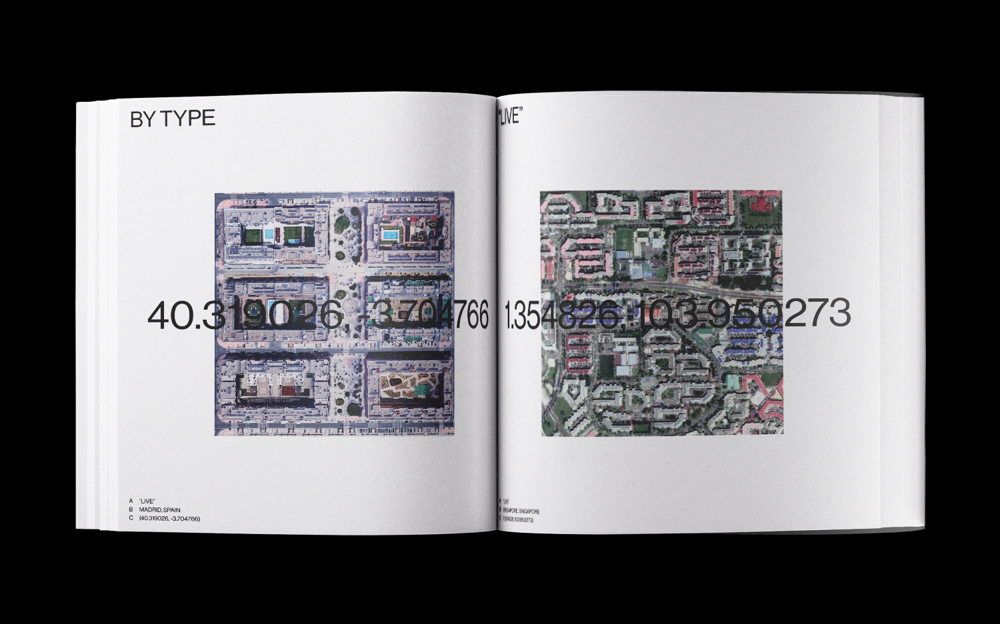
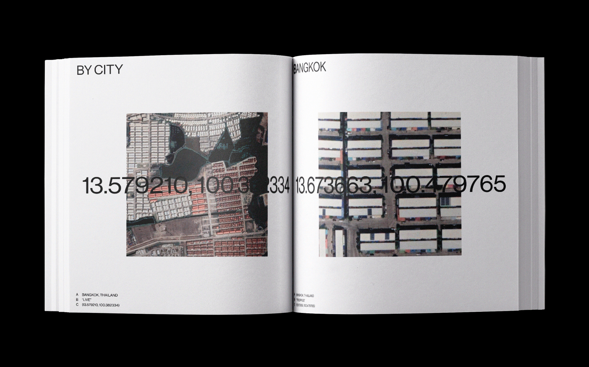

STEFANIE TAM
INFORMATION
08.2018; 6"x6", WEBSITE
HTTP://OFPLACE.INFO/ is the result of an extensive
surveillance collection of Google Maps satellite images. With choices dictated by randomization,
pre-established rules, curiosity, and intuition, ://OFPLACE. archives 600 images of 20 different cities.
://OFPLACE. simultaneously compares and contrasts both basic and strange infrastructural features of various
cities while it also allows the user to explore cities around the world in a way that’s dictated by
intuition rather than preconceived notions tied to a specific location.
://OFPLACE. explores the
relationship between print and web to reflect the contrasting nature of digital and physical within the
quickly evolving landscape of contemporary design and art practices. Creating ://OFPLACE. was an exercise of
transparent data collection and reflection of dispersion of information.